Summary paragraph
For the seamless_2t_2s_questions protocol, gemini-3.1-flash-live-preview shows solid overall conversational naturalness, but the report does not provide substantive intelligibility or interruption outcome details beyond indicating no reported interruption results. Its main weakness is turn-taking: surprisal is consistently worse than human in both improvised and naturalistic data, with higher NLLs that suggest less human-like response timing and predictability. In language behavior, the model is overwhelmingly English-dominant with only minimal secondary-language spillover, which is a strength for consistency but also indicates limited multilingual leakage rather than broad language flexibility. Dialectally, it exhibits moderate entrainment but somewhat higher dialectal variance in the improvised subset, implying some adaptation without strong stabilization. For stance, it is mostly aligned in sign with human behavior, though a small number of dimensions skew slightly more positive or more negative, so the social tone is broadly consistent but not perfectly matched. Emotional naturalness and explainable speech-feature analyses are mentioned, but the report text here provides no concrete numeric findings, so the clearest tradeoff is strong English consistency and generally aligned stance versus weaker turn-taking naturalness and limited evidence of deeper acoustic matching.
Data, Models, and Setup
Data
| metric | Improvised dev | Improvised test | Naturalistic dev | Naturalistic test | Total |
|---|---|---|---|---|---|
| Unique human dialogues | 270 | 181 | 480 | 511 | 1442 |
| Selected dialogues | 1165 | 994 | 1529 | 1731 | 5419 |
| Hours of questions | 4.78h | 3.76h | 6.76h | 7.47h | 22.77h |
| Hours of human answers | 2.67h | 2.29h | 5.23h | 4.36h | 14.56h |
| Human total hours | 7.45h | 6.05h | 12.00h | 11.83h | 37.33h |
| Hours of generated answers | 2.65h | 2.42h | 3.94h | 4.09h | 13.10h |
| Mean human answer length | 8.26s | 8.28s | 12.32s | 9.07s | |
| Mean generated answer length | 10.54s | 10.69s | 11.28s | 10.39s |
Models
| parameter | value |
|---|---|
| LLM model used for inference | gemini-3.1-flash-live-preview |
| ASR models used | Qwen3-ASR-0.6B, whisper-large-v3 |
| Language ID model | facebook/mms-lid-126 |
| Dialect ID model | tiantiaf/voxlect-english-dialect-whisper-large-v3 |
| LLM used for stance | gpt-audio-1.5 |
| Statistical tests used for p-values | Mann-Whitney U Test |
| UTMOS model | tarepan/SpeechMOS:v1.2.0 utmos22_strong |
| VAD model | silero-vad |
Setup
| parameter | value |
|---|---|
| protocol | seamless_2t_2s_questions |
| selection_method | end_with_question |
| min_turns | 2 |
| min_speakers | 2 |
| splits | dev,test |
| subsets | improvised,naturalistic |
| data_root | data/seamless_2t_2s_questions |
| results_root | results/seamless_2t_2s_questions |
Intelligibility and Interruption Metrics
| Metric | System | model_mean_naturalistic | human_mean_naturalistic | model_mean_improvised | human_mean_improvised |
|---|---|---|---|---|---|
| CER | Qwen3-ASR-0.6B | 26.09 | 19.70 | 30.35 | 16.27 |
| CER | whisper-large-v3 | 27.21 | 17.13 | 3.49 | 13.99 |
| WER | Qwen3-ASR-0.6B | 28.85 | 32.24 | 38.05 | 28.28 |
| WER | whisper-large-v3 | 28.78 | 25.42 | 7.89 | 20.11 |
| UTMOS | 4.1053 | 2.1655 | 4.1328 | 2.3207 | |
| latency | 106.5678 | 929.6360 | 68.7117 | 415.3924 | |
| average number of interruptions per dialogues | 0.00 | 0.50 | 0.00 | 0.55 | |
| interrupted time (s) | 0.000 | 0.520 | 0.000 | 0.522 | |
| number of dialogues with interruption | 0/1416 | 545/1731 | 0/815 | 377/994 |
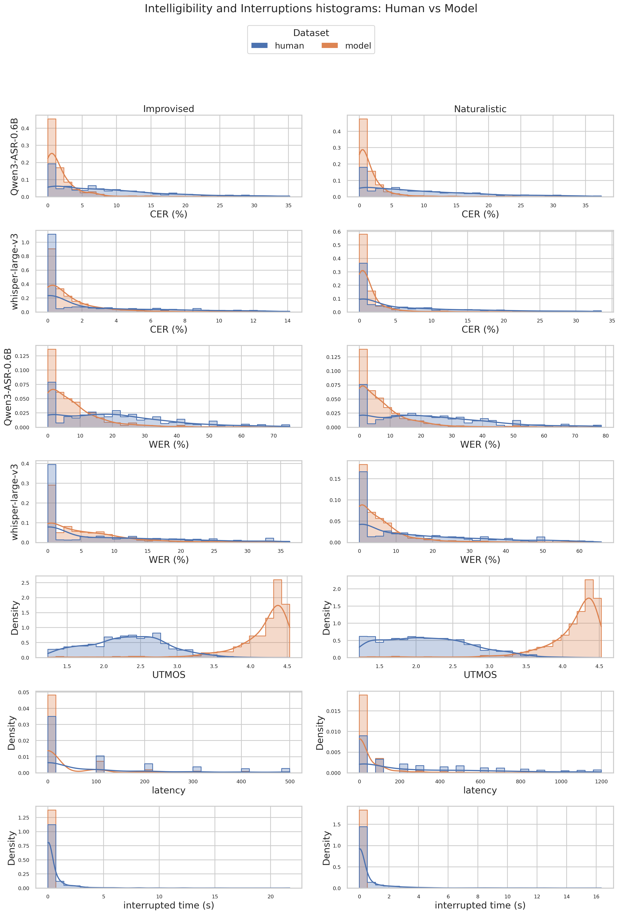
Basic metric histogram gallery
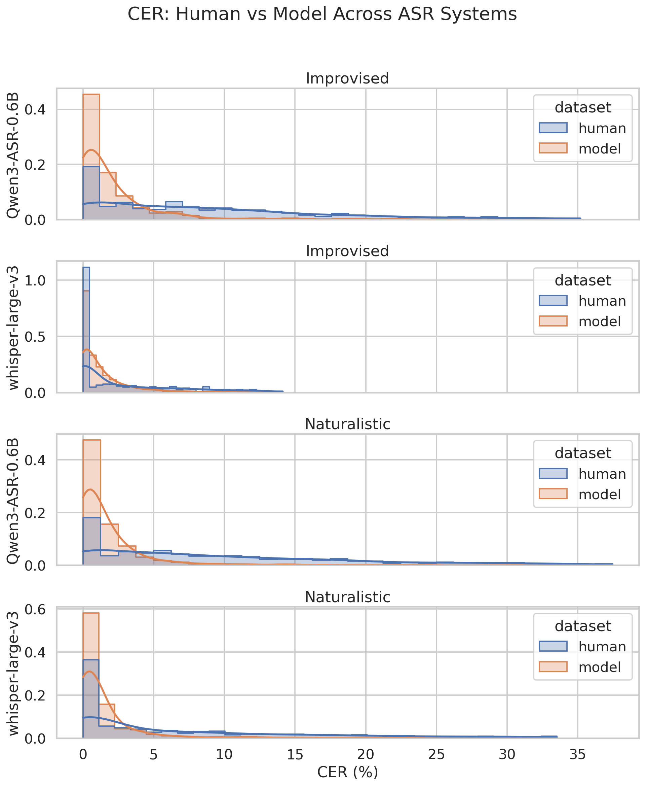
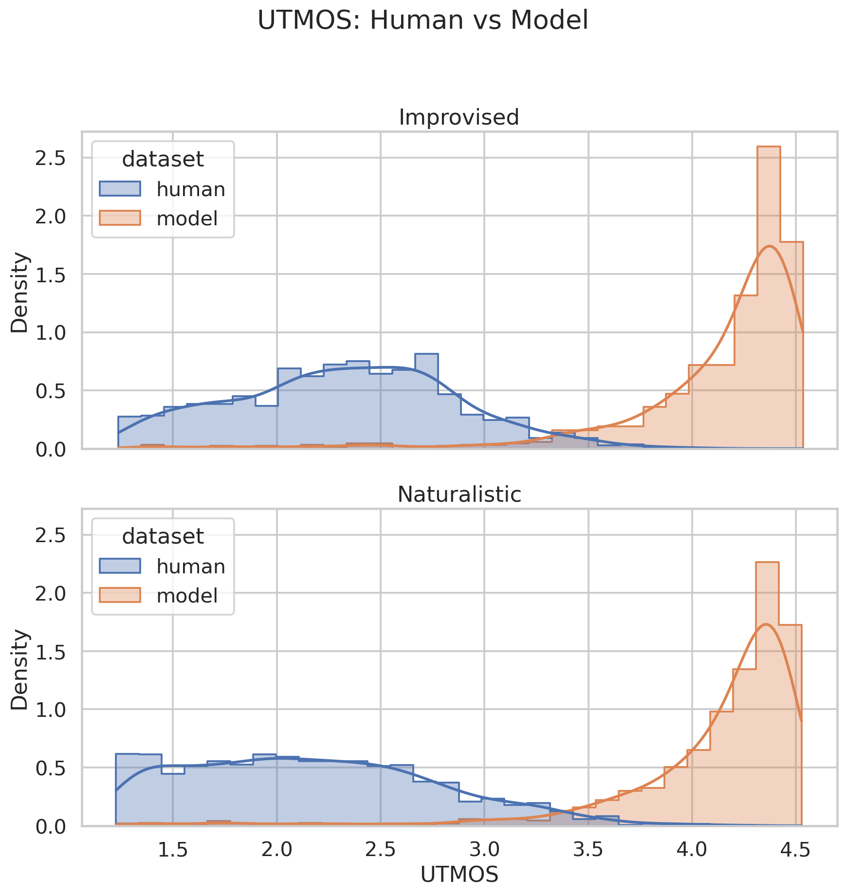
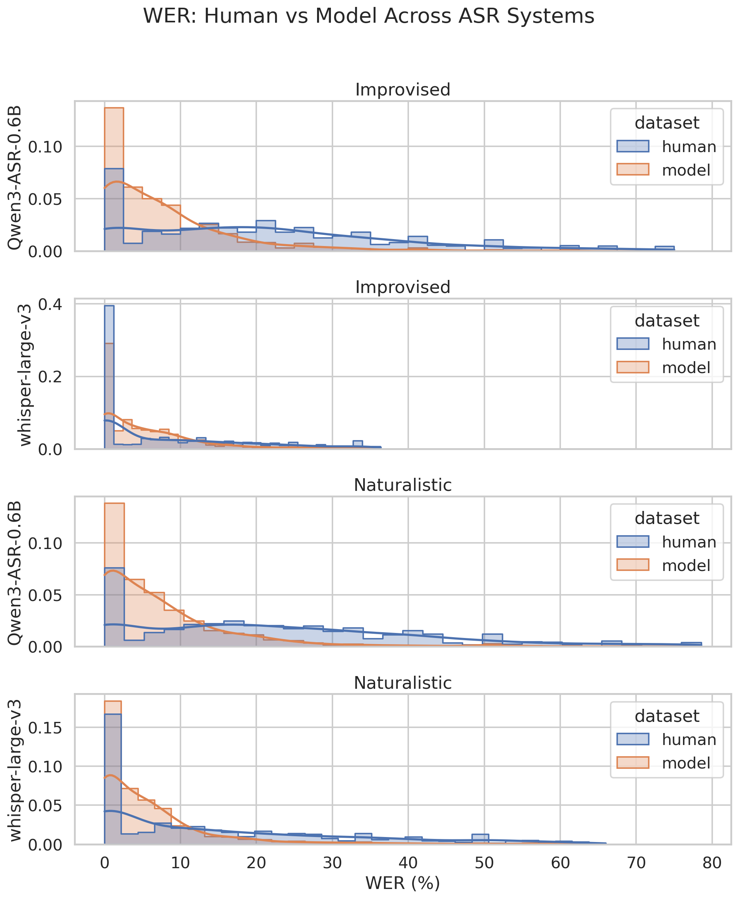
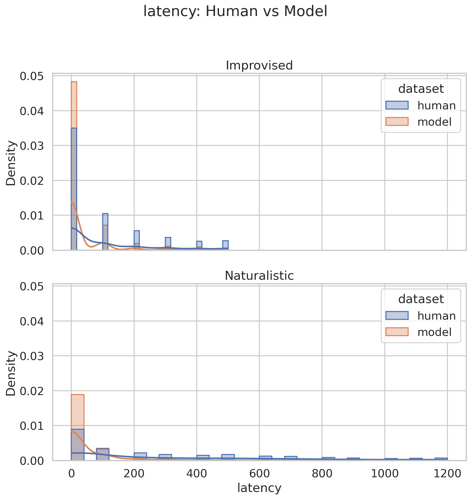
Turn Taking Surprisal
| metric | model - improvised | model - naturalistic | human - improvised | human - naturalistic |
|---|---|---|---|---|
| mean_nll | 4.869 | 4.733 | 4.439 | 4.525 |
| tail_nll | 5.911 | 5.916 | 5.286 | 5.598 |
| dialog_nll | 5.39 | 5.324 | 4.862 | 5.061 |
| naturalness_score | 5.39 | 5.324 | 4.862 | 5.061 |
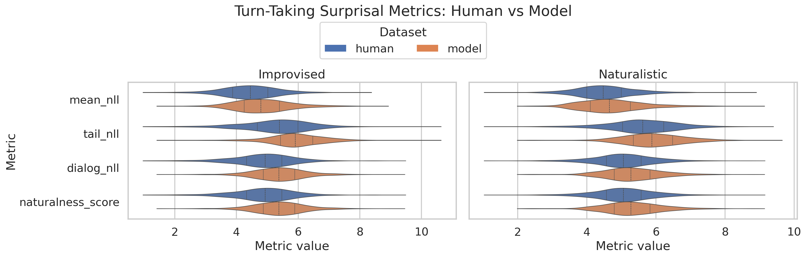
Language and Dialect ID
| subset | % Eng in models' answers | % Eng in human answers | second most spoken language in models' answers | percentage 2nd language in models' answers | second most spoken language in human answers | percentage 2nd language in human answers |
|---|---|---|---|---|---|---|
| improvised | 99.620253 | 99.73545 | dan | 0.126582 | Vietnamese | 0.088183 |
| naturalistic | 99.704142 | 99.01332 | nob | 0.073964 | dan | 0.345338 |
| Subset | Question/Answer | East Asia | English | Germanic | Irish | North America | Northern Irish | Oceania | Other | Romance | Scottish | Semitic | Slavic | South African | Southeast Asia | South Asia | Welsh |
|---|---|---|---|---|---|---|---|---|---|---|---|---|---|---|---|---|---|
| improvised | Question | 0.245399 | 0.000000 | 0.000000 | 5.644172 | 80.245399 | 0.0 | 0.000000 | 0.000000 | 9.693252 | 0.000000 | 0.000000 | 0.122699 | 0.000000 | 0.490798 | 0.122699 | 0.0 |
| improvised | Answer | 0.000000 | 0.000000 | 0.127065 | 0.762389 | 97.712834 | 0.0 | 0.000000 | 0.000000 | 0.889454 | 0.000000 | 0.127065 | 0.127065 | 0.000000 | 0.254130 | 0.000000 | 0.0 |
| naturalistic | Question | 1.906780 | 0.564972 | 0.282486 | 4.519774 | 68.432203 | 0.0 | 0.282486 | 0.141243 | 16.596045 | 0.211864 | 0.353107 | 0.141243 | 0.282486 | 1.341808 | 0.141243 | 0.0 |
| naturalistic | Answer | 0.000000 | 0.000000 | 0.074184 | 1.038576 | 96.810089 | 0.0 | 0.074184 | 0.222552 | 1.409496 | 0.000000 | 0.000000 | 0.074184 | 0.000000 | 0.074184 | 0.222552 | 0.0 |
Dialectal Metrics
| subset | metric | mean_diff | n | detail |
|---|---|---|---|---|
| improvised | Dialectal entrainment | 0.6087 | 772 | computed from dialect_logits.csv question_log_logits and answer_log_logits |
| improvised | Dialectal variance | 191.4485 | 772 | computed from dialect_logits.csv question_log_logits and answer_log_logits |
| naturalistic | Dialectal entrainment | 0.5081 | 1315 | computed from dialect_logits.csv question_log_logits and answer_log_logits |
| naturalistic | Dialectal variance | 167.9649 | 1315 | computed from dialect_logits.csv question_log_logits and answer_log_logits |
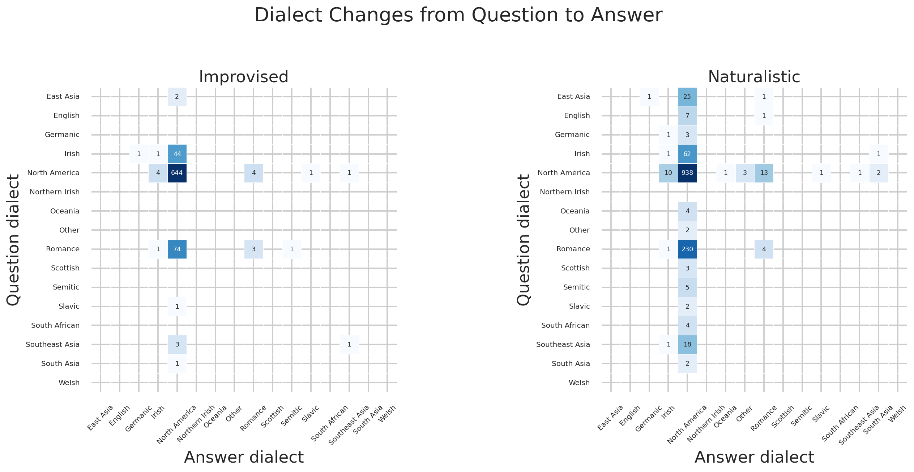
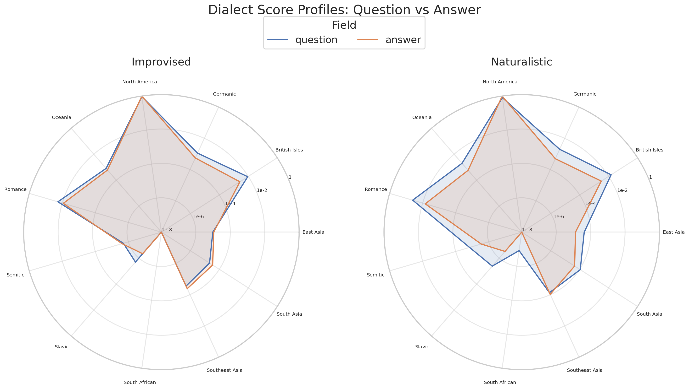
Emotional Naturalness
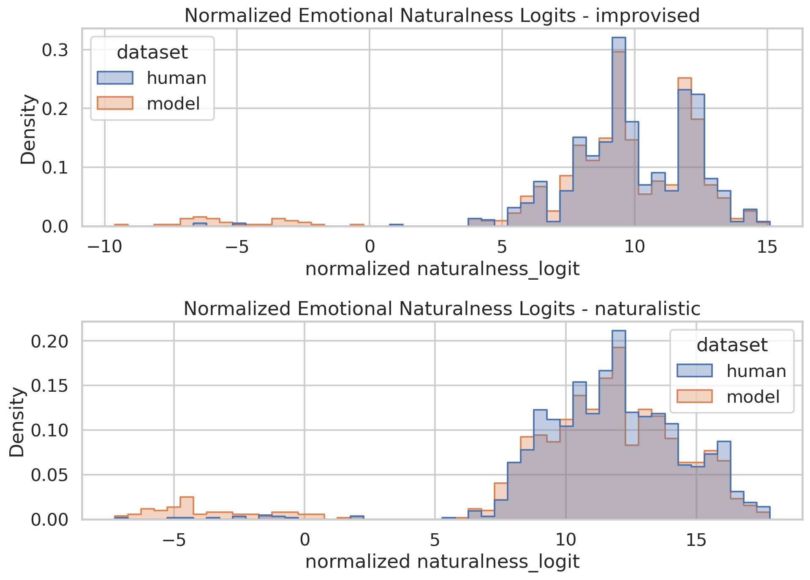
The relationship violin plot breaks naturalistic emotional naturalness logits down by relationship label.
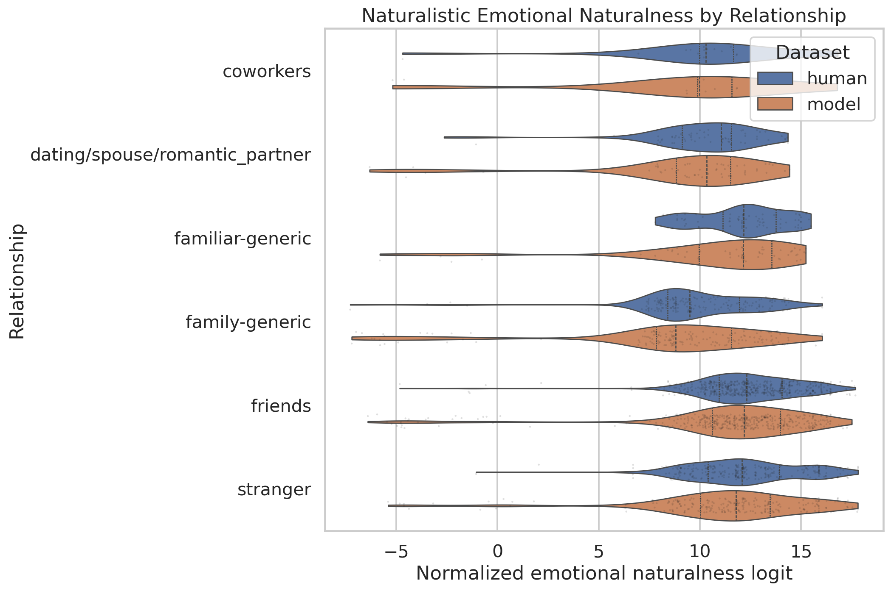
The emotion scatter plot compares full-question and full-answer Arousal, Dominance, and Valence scores normalized to [-1, 1]. Dotted lines show per-dataset correlations with rho labels.
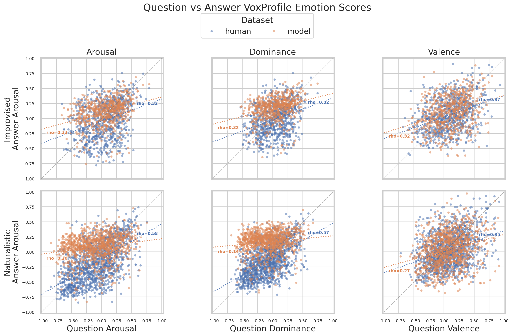
STANCE
Stance Descriptions
| stance | positive_human_% | negative_human_% | definition |
|---|---|---|---|
| Q0 | 81.13207547169812 | 18.867924528301888 | Based on the audio, does the TARGET speaker sound warm and affiliative, or cold and detached? |
| Q1 | 46.835443037974684 | 53.164556962025316 | Based on the audio, does the TARGET speaker sound compassionate and supportive, or callous and unsympathetic? |
| Q2 | 31.70731707317073 | 68.29268292682927 | Based on the audio, does the TARGET speaker sound polite and respectful, or rude and disrespectful? |
| Q3 | 21.428571428571427 | 78.57142857142857 | Based on the audio, does the TARGET speaker sound assertive and self-confident, or hesitant and inhibited? |
| Q4 | 56.16438356164384 | 43.83561643835616 | Based on the audio, does the TARGET speaker sound straightforward and sincere, or sly and manipulative? |
| Q5 | 100.0 | 0.0 | Based on the audio, does the TARGET speaker sound attentive and focused, or confused and distracted? |
| Q6 | 17.391304347826086 | 82.6086956521739 | Based on the audio, does the TARGET speaker sound organized and goal-driven, or disorganized and unmotivated? |
| Q7 | 68.85245901639344 | 31.147540983606557 | Based on the audio, does the TARGET speaker sound socially engaged and expressive with the other speaker, or withdrawn and disengaged? |
| Q8 | 51.02040816326531 | 48.97959183673469 | Based on the audio, does the TARGET speaker accommodate and yield to the other speaker’s preferences, or do they try to control and dominate? |
| Q9 | 0.0 | 100.0 | Based on the audio, does the TARGET speaker stay calm and avoid confrontation, or are they hostile and aggressive? |
Results
| dataset | STANCE same sign (%) | More positive (%) | More negative (%) |
|---|---|---|---|
| human | 100.000000 | 0.0 | 0.0 |
| gemini-3.1-flash-live-preview | 96.101365 | 1.949317738791423 | 2.3391812865497075 |
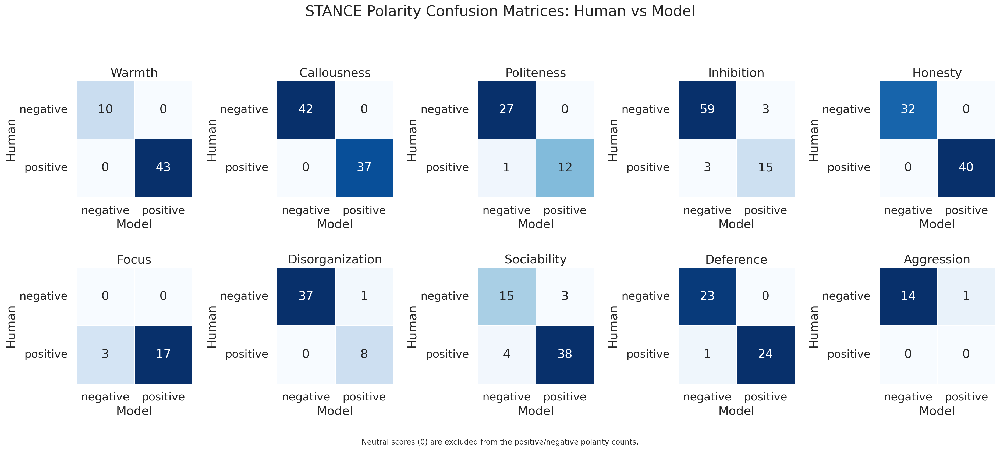
Explainable Features
Explainable feature rows report model-minus-human mean differences and p-values for numeric pitch, lexical, and temporal features.
Pitch Based
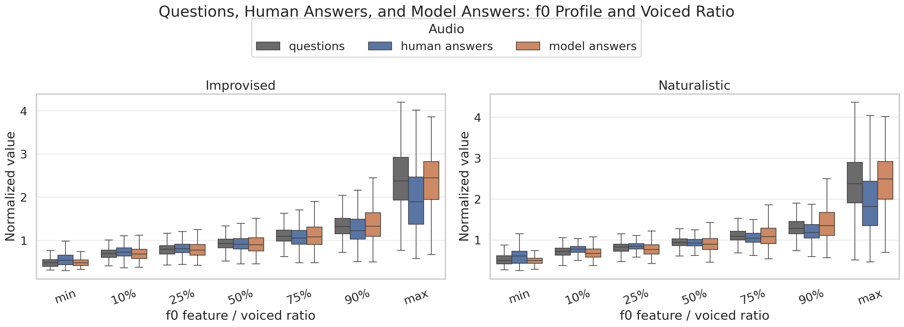
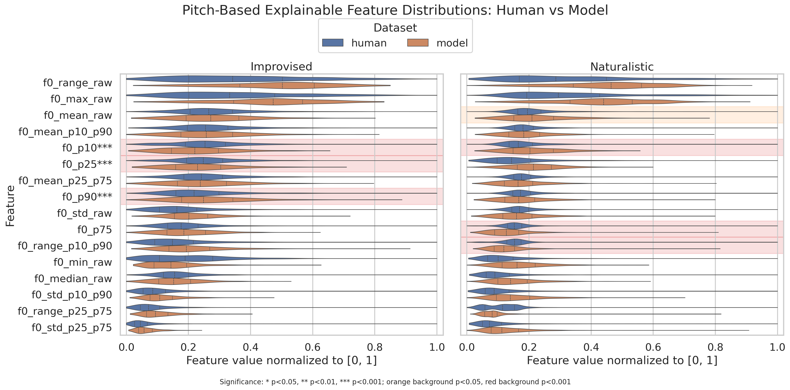
Lexical Features
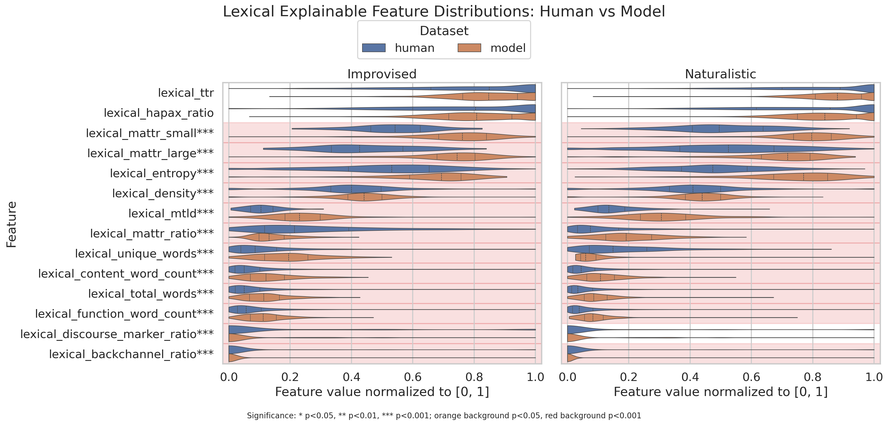
Temporal Features
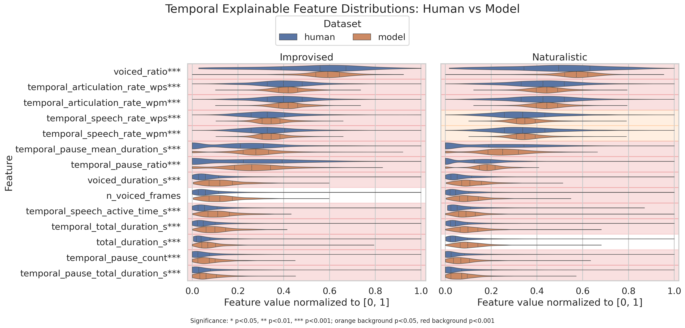
Per-feature histogram gallery